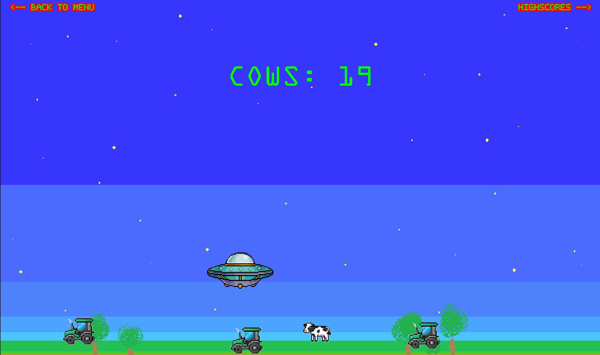
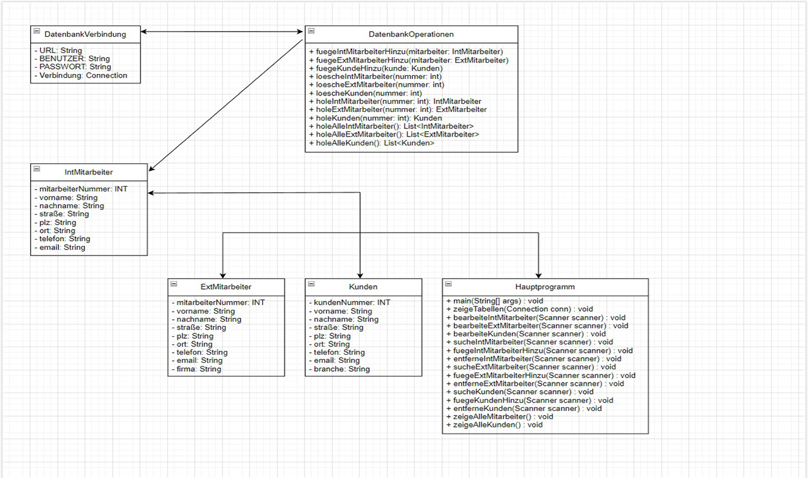
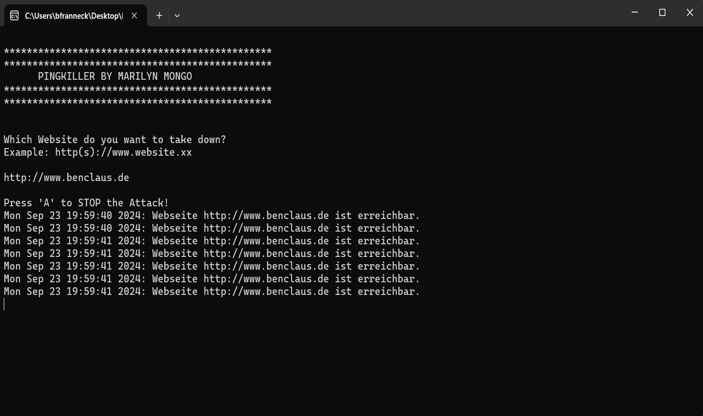

Spiele
Kleine Spiele, die ich entwickelt habe. Sie sind direkt im Browser spielbar und werden stetig weiterentwickelt. Schau immer mal wieder vorbei – es gibt bald noch mehr!
Schulische Projekte
Eine Übersicht von Anwendungen, die im Rahmen meiner Umschulung entstanden sind. Der Fokus liegt dabei vor allem auf Datenbanken und Verwaltungsanwendungen.
Private Projekte
Hier findest du eine Sammlung kleinerer Projekte, die ich privat umgesetzt habe. Nicht alle sind sinnvoll, nicht alle perfekt durchdacht – aber jedes einzelne war eine spannende Herausforderung!